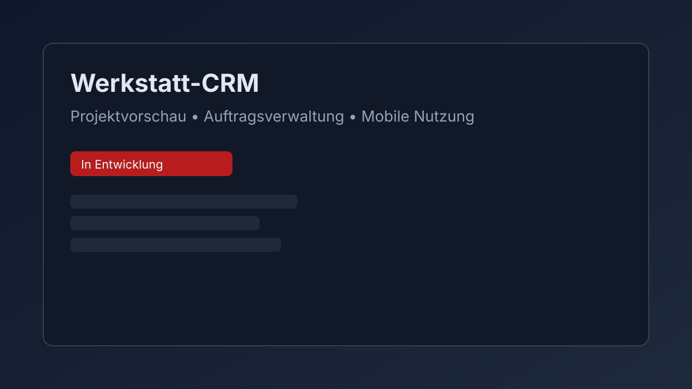
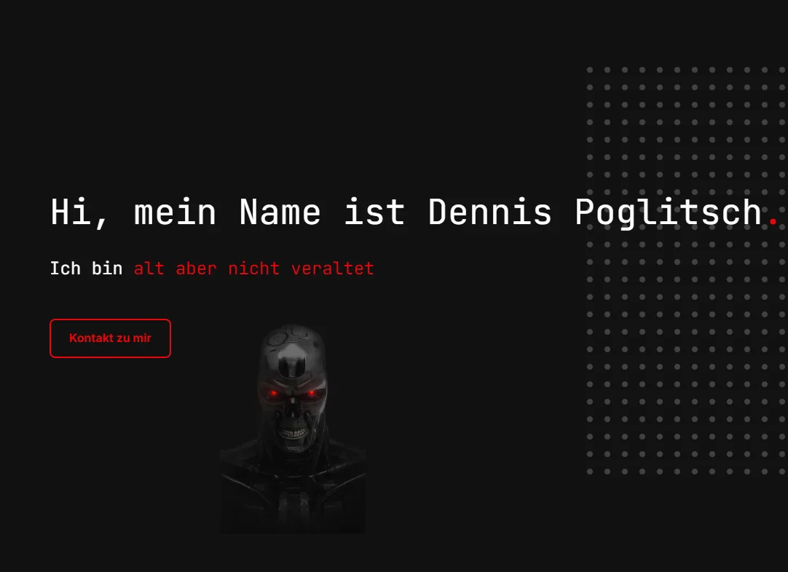

Über mich.
Technik fasziniert mich nicht nur – sie treibt mich an.
Ich bin eine offene, lernbereite und lösungsorientierte Person mit großer Motivation für den Einstieg in die Softwareentwicklung.
Ein respektvoller Umgang, ehrliche Kommunikation und gemeinsames Arbeiten an Lösungen sind für mich selbstverständlich.
Durch meine bisherige Berufserfahrung arbeite ich auch in stressigen Situationen ruhig, strukturiert und zuverlässig.
Ich übernehme Verantwortung, denke mit und eigne mir neue Themen schnell an.
Mein Interesse an der Anwendungsentwicklung kommt aus echter Begeisterung für Logik, Struktur und kreative Problemlösung.
Beim Programmieren analysiere ich Probleme Schritt für Schritt und entwickle praktische Lösungen,
Fehler sehe ich dabei als Lernchance.
Die Ausbildung zum Fachinformatiker für Anwendungsentwicklung ist für mich eine bewusste berufliche Entscheidung.
Ich möchte langfristig wachsen, mein Wissen vertiefen und mein Engagement in einem Ausbildungsbetrieb einbringen.
Meine Fähigkeiten.
- Java
- Python
- PHP
- MySQL
- JavaScript
- HTML
- CSS
Projekte.

Werkstatt-CRM (in Entwicklung)
CRM-Lösung für Werkstätten mit Fokus auf digitale Aufträge, mobile Nutzung und saubere Prozesse.

Live Wetter Widget
API-basiertes Wetter-Widget mit Python im Browser und dynamischer Ortssuche.

Entwickler-Portfolio
Modernes Portfolio mit Fokus auf Struktur, Performance und professioneller Präsentation.
Kontakt.
Schreib mir gerne eine Nachricht – ich freue mich auf den Austausch.